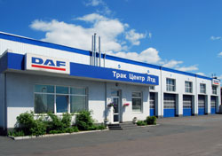

ООО «Трак Центр Лтд»
Трак Центр Лтд - современный диагностический центр и центр по обслуживанию и ремонту грузовиков, прицепов и автобусов
Будь это профилактические работы или серьезный ремонт, команда профессиональных специалистов готова обслуживать Вас.
Полный комплекс услуг предоставляется в помещении более 3000 м2, эффективно обогревается, с 10 изолированными секционными подъемными воротами, которые позволяют заезжать автомобилям высотой до 4,45 м.
Об основных направлениях деятельности и партнеров ООО «Трак Центр Лтд»:
Официальный ДАФ Сервис Дилер ™ и дилер по продаже ДАФ ™
 Трак Центр Лтд - сертифицированный дилер по сервису и продажам автомобилей компании ДАФ Тракс Н.В. в Украине и соответственно, имеет следующие преимущества:
Трак Центр Лтд - сертифицированный дилер по сервису и продажам автомобилей компании ДАФ Тракс Н.В. в Украине и соответственно, имеет следующие преимущества:
- Склад оригинальных запасных частей ДАФ, что пополняется каждую неделю;
- Право на осуществление гарантийного обслуживания автомобилей ДАФ.
- Право на выдачу экологических сертификатов, а также сертификатов шумности и безопасности на автомобиле ДАФ.
- Диагностическое оборудование для контроля за электронными системами автомобилей ДАФ и их программирования. Программное обеспечение регулярно пополняется непосредственно заводом производителем ДАФ.
- Полный комплект технической документации по ремонту автомобилей ДАФ.
- Полный комплект специального инструмента
- Профессиональную команду менеджеров и механиков, прошедших техническое обучение непосредственно на заводе ДАФ в Нидерландах и в собственном учебном центре
- Новые автомобиля ДАФ, поставляемых непосредственно с завода ДАФ.
Все это дает возможность предоставлять услуги нашим клиентам на высоком профессиональном уровне в полном соответствии рекомендациям завода-изготовителя.
Одна остановка - полный сервис
 Принцип "одна остановка - полный сервис" заложен в основу стратегии построения компании.
Принцип "одна остановка - полный сервис" заложен в основу стратегии построения компании.
Кроме основной деятельности направленной на всестороннее содействие и становление достойного места автомобилям производства ДАФ на рынке Украины,
Трак Центр Лтд диагностирует, обслуживает и ремонтирует широкий спектр транспортных средств других производителей включая прицепную технику, специальную технику и автобусы.
В наличие компьютерное диагностическое оборудование для коммерческих автомобилей всех брендов (DAVIE XD, TEXA, WABCO, TestmanPro).
Трак Центр Лтд имеет партнерские отношения с производителями прицепной техники, такими как:
Schwartzmuller, Burg, Schmitz, Кässbohrer, LAG, Lohr, Koegel
А также, с производителями автобусов:
VDL, Solaris, MAZ, LAZ
ZF Сервис
ZF Трак Центр Лтд имеет статус Официального партнера по сервису ZF в Украине. (Сектор грузовиков, автобусов и троллейбусов.
Благодаря этому статусу Трак Центр Лтд имеет полный комплект технической документации, диагностического оборудования, специального инструмента и обученных, непосредственно на заводах ZF, специалистов.
 Трак Центр Лтд выполняет диагностирование, обслуживание, гарантийный и пост гарантийный ремонт агрегатов производства ZF таких, как:
Трак Центр Лтд выполняет диагностирование, обслуживание, гарантийный и пост гарантийный ремонт агрегатов производства ZF таких, как:
- Механические КПП ZF 16S150, 16S181, 16S220
- Полуавтоматические и автоматические КПП AS- Tronic, Ecomat
- Передние оси ZF
- Задние оси ZF
- Рулевой механизм ZF
- Другие агрегаты ZF
Запасные части поставляются непосредственно с заводов ZF.
Современный диагностический центр. Центр Технического осмотра автомобилей
Трак Центр Лтд это современный диагностический центр оборудован средствами всестороннего диагностирования транспортных средств всех категорий.
Трак Центр Лтд осуществляет проверки технического состояния колесных транспортных средств с выдачей справок о техническом состоянии для страховых компаний и для получения Международного сертификата технического осмотра (МСТО).
ООО «Трак Центр Лтд» имеет всё необходимое оборудование и Аккредитацию Национального Агентства Украини, зарегестрированную по № 7С106 23 августа 2011 года в соответствии требованиям ДСТУ ISO/IEC 17020 - 2001 (ISO/IEC 17020 - 1998) в гобласти:
Инспектирование колёсных транспортных средств Автомобилей категорий М1 - М3,
N1 - N3, O1 - O4.
Качество - составляющая успеха
 Трак Центр Лтд построил и воплотил на предприятии систему контроля качества в соответствии с требованиями Международного и Украинского Стандартов качества:
Трак Центр Лтд построил и воплотил на предприятии систему контроля качества в соответствии с требованиями Международного и Украинского Стандартов качества:
ISO9001-2008. Международный стандарт качества. (Сертификат № QSR 0133/07)
И ДСТУ ISO9001-2001 (Сертификат в системе УкрСЕПРО № UA2.034.02585-07)
ДСТУ ISO/IEC 17020 - 2001 (ISO/IEC 17020 - 1998) (Аттестат Аккредитации № 7С106 от 23 августа 2011 года).
"Трак Центр Лтд":
ВАШ НАДЕЖНЫЙ ПАРТНЕР -
Всегда готовы сотрудничать с ВАМИ.